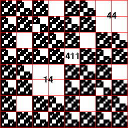

| 2(b) This picture is not generated by forbidden pairs. |
| To see this, note the empty length 2 address squares have addresses 44 and 14. |
| If this picture were generated by forbidden pairs, then all empty squares would have addresses containing 44 or 14. |
| Note the indicated empty square with address 411. This address contains neither 44 nor 14, so this picture is not generated by forbidden pairs. |
|  |
Return to Homework 3 Practice.